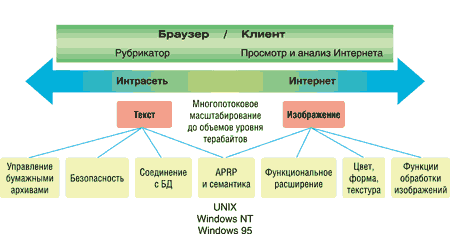
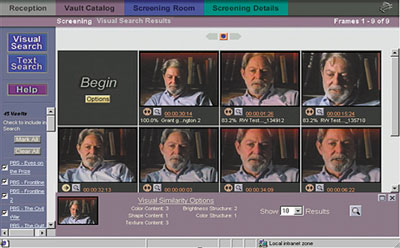
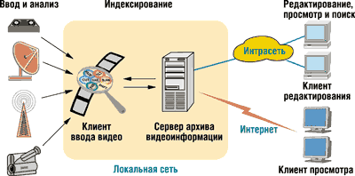
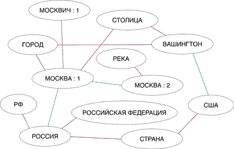

Андрей Колесов
Умение наиболее эффективным образом распорядиться информационными ресурсами - одно из основных предпосылок успешной деятельности любой организации, работающей в условиях постоянно растущей конкуренции. Использование максимального числа источников данных, высокая скорость обработки запросов, полнота и достоверность результатов - вот лишь некоторые характеристики подобных систем управления знаниями.
Отметим некоторые проблемы их реализации. Во-первых, сами по себе ресурсы Интернета зачастую не решают задачи пользователей - найти там что-то нужное с помощью обычных поисковых запросов совсем не легко. К тому же для любой организации очень важна возможность прибегнуть к собственному опыту работы. В результате практически каждый крупный корпоративный заказчик идет на создание собственного электронного архива данных (чаще всего в смешанном варианте использования внутренних и внешних информационных ресурсов). Многие также предпочитают это из соображений информационной безопасности.
Во-вторых, наибольший объем информации находится в неструктурированных документах. Сегодня это в первую очередь самые разнообразные текстовые данные. Но уже сейчас актуальна обработка фото-, видео- и звуковой информации, объем которой будет расти лавинообразно.
В-третьих, при выборе технологии поиска нужно учитывать целый ряд аспектов. Во-первых, необходимость работы с документами на разных языках. Во-вторых, реализация механизма нечеткого поиска. (Кто может сегодня быстро вспомнить, как пишется по-английски знаменитая американская компьютерная фирма 70-х годов "Барроус"? Не говоря уже о массе опечаток в документах.) В-третьих, поддержка большого числа форматов документов. В-четвертых...
Осознав необходимость создания электронного архива, заказчик встает перед проблемой выбора подходящего инструмента. И тут ему нужно учитывать еще аспект масштабируемости, так как по опыту реализации подобных проектов легко спрогнозировать чрезвычайно быстрый рост как объемов данных, так и числа классов задач обработки и анализа.
Сегодня на рынке довольно много инструментов для создания систем управления знаниями. Но корпоративным клиентам в любом случае полезно познакомиться с разработками корпорации Convera Technologies (http://www.convera.com; ранее - Excalibur Technologies Corp.), одного из лидеров в этой области. Продвижением и поддержкой продуктов Convera в России занимается компания "Весть-МетаТехнология" (http://www.vest.msk.ru).
Архитектура и состав семейства Convera RetrievalWare
Все продукты семейства Convera RetrievalWare (рис. 1) построены в масштабируемой распределенной клиент-серверной архитектуре, которая обеспечивает работу пользователей как через корпоративную локальную сеть, так и через Интернет. Серверная часть системы может работать на широком круге платформ - Microsoft Windows NT, UNIX (Sun Solaris, Linux, IBM/AIX, HP-UX, Digital Alpha и т. д.). Клиентским местом может служить любой компьютер с Web-браузером.
|  |
| Рис. 1. Архитектура Convera RetrievalWare.
|
В качестве источников информации используются файловая система, различные СУБД, почтовые системы (Microsoft Exchange, Lotus Notes), системы управления документами (Documentum EDMS, FileNET Panagon, Teradata Database и т. д.), Web-узлы корпоративных сетей и Интернет, а также электронный архив RetrievalWare FileRoom.
В состав семейства Convera RetrievalWare в настоящее время входят следующие продукты:
- Convera RetrievalWare CDExpress. Это инструмент создания компакт-дисков с подборками документов и поисковым механизмом RetrievalWare.
- Convera RetrievalWare FileRoom. Продукт предназначен для работы с бумажными архивами. В системе хранятся отсканированные образы документов и текстовые файлы, полученные в результате распознавания. Работа ведется как с самими документами, так и с их учетными карточками. Интерфейс пользователя может быть представлен в виде виртуальных шкафов, ящиков и папок.
- Convera Internet Spider. Средство поиска информации в локальных и глобальных сетях. Поиск выполняется в соответствии с установками пользователя (типы документов, глубина и широта обхода сайта, частота обновления и пр.); результаты заносятся в специализированную базу данных. Доступ в Интернет может выполняться через межсетевые экраны типа SOCKS и HTML proxy firewall.
- Convera Visual RetrievalWare. Инструментальное средство, позволяющее проводить поиск графической информации по ее соответствию изображению-запросу, а также выполнять другие действия с графической информацией (в том числе и с оцифрованным видео). На основе Visual RetrievalWare строятся архивы графической информации с развитыми поисковыми возможностями (рис. 2).
|  |
| Рис. 2. Поиск по архиву изображений.
|
- Convera Screening Room. Средство организации видеоархивов, основанное на построении удобного для пользователя представления видеороликов в виде последовательности характерных кадров (рис. 3). Вместе с видеоинформацией хранится и текст (атрибутивная информация, субтитры, распознанный звук и т. п.).
|  |
| Рис. 3. Логика работы Convera Screening Room.
|
В основе всех этих продуктов лежат две ключевые поисковые технологии: лингвистические и адаптивного распознавания образов (Adaptive Pattern Recognition Processing, APRP).
Логический поиск
В данном случае речь идет о знакомых большинству компьютерных пользователей методах поиска, основанных на совпадении ключевых слов (или их шаблонов) с содержанием текстовых документов. RetrievalWare использует возможность работы как с индексами информационных массивов, так и напрямую с документами. Однако далее возникают проблемы конкретной реализации возможностей запросов и оценки результатов поиска.
Для аннотированных документов можно использовать атрибутивный поиск по полям. При работе с полнотекстовыми массивами данных чаще всего мы применяем запросы с логическими операторами и метасимволами, которые могут выглядеть примерно так:
расписание AND (электрич* OR (пригородн* AND поезд*)) AND Ярослав* AND (13-15)
Во всех случаях можно выполнять вложенные запросы (по ранее отобранному массиву документов).
Другой важный механизм - автоматическая оценка значимости найденных документов: чтобы в первую десятку из списка найденных длиной в тысячу попали действительно наиболее полезные. Кроме тривиальных методов на основе частоты использования искомых слов RetrievalWare позволяет учитывать их расположение в документе, в том числе физическое расстояние между словами. (Без этого по указанному выше запросу можно найти рассказ о студенте, который утром посмотрел расписание занятий, потом позвонил знакомой в Ярославль, а затем в два часа дня уехал на электричке в Малаховку.)
В целом на основе этого же механизма выполняется процедура рубрикации входящих документов, главная изюминка которой - механизм составления описаний рубрик, в том числе автоматически с помощью технологий самообучения. В частном случае это может осуществляться в виде автоматического определения "интересных" для конкретного человека документов на основе анализа нескольких десятков или сотен документов, отобранных ранее вручную.
Семантическая сеть
Однако наиболее высокое качество поиска, в том числе его полнота, обеспечивается за счет учета морфологии и семантики конкретного языка. Реализация морфологического блока обеспечивает поиск слова в любой его словоформе. Кроме удобства для пользователя, которому не нужно в этом случае использовать шаблоны (Андр* = Андрея, Андрюше, ... Андропову!) или сложные логические формулы (Вов* AND Волод* AND Владимир*), данная технология повышает эффективность поиска за счет существенного сокращения индексных файлов архивов и частичного разрешения омонимии.
Семантический блок автоматически преобразует запросы пользователей на естественном языке в набор связанных по смыслу понятий. Наличие этого блока позволит, например, при запросе "Расписание электричек" найти документ с текстом "Время отправления пригородных поездов". В основе этого механизма лежит применение семантической сети - ориентированного графа, соединяющего между собой слова и понятия и приписывающего связям определенные весовые коэффициенты (рис. 4).
|  |
| Рис. 4. Пример семантической сети.
|
Гибкость адаптации технологии поиска к решению конкретных задач обеспечивается, в частности, за счет одновременного использования нескольких словарей и нескольких семантических сетей (включая наложение нескольких сетей на один словарь). В результате можно создавать иерархическую структуру поисковой системы: общеупотребительный язык - область деятельности - организация - подразделение - пользователь.
Семантический механизм применяется на двух этапах поиска. На первом введенные в запросе слова дополняются связанными по смыслу (синонимы, варианты написания, аббревиатуры и т. п.). На втором этапе при помощи весовых коэффициентов связей выполняется ранжирование найденных документов по степени соответствия запросу. Очень важно, что учет семантики позволяет определять смысловую связь используемых в запросе слов. Поэтому при запросе "писатель Владимир Ильин" будет найден документ с фразой "литератор В. Ильин" и не будет принята во внимание статья о визите российских писателей в город Владимир на празднование Ильина дня. Более того, применение семантики позволяет учитывать общий контекст документа, например, определяя по характеристикам словаря текста тип документа: газетная статья, юридический документ, инструкция по эксплуатации и т. п.
Русский Семантический Сервер
Адаптация поисковых механизмов RetrievalWare к работе с русскоязычными документами была выполнена компанией "Весть-МетаТехнология" в рамках общей работы по локализации данного продукта. В результате кроме создания русскоязычного интерфейса и перевода документации был разработан Русский Семантический Сервер (РСС) - набор программных средств и информационных ресурсов для полнотекстового поиска с учетом специфики русского языка.
Для учета морфологии и семантики необходимы как технология подключения соответствующих словарей, так и сами словари. В ходе локализации особенности русского языка потребовали не только создания информационных ресурсов (упрощенно говоря, словарей), но и модернизации механизма их подключения. В рамках локализации в ядро системы были внесены значительные изменения, поэтому можно говорить о создании оригинальной технологии поиска для русского языка. При работе с английскими словами лингвистический аппарат RetrievalWare используется в оригинальном варианте.
Библиотека морфологического анализа включает словарь объемом 240 тыс. словарных статей, который пользователь может пополнять самостоятельно. Семантическая сеть словаря русского языка включает около 90 тыс. слов и идиоматических выражений, а также более 350 тыс. связей между ними. Для сравнения - семантическая сеть для английского языка содержит 500 тыс. слов и 1,6 млн связей. Здесь следует отметить, что до последнего времени в нашей стране такие масштабные работы для русского языка просто не велись (во всем мире подобные задачи решаются на государственном уровне), поэтому РСС сейчас включает только общеупотребительную и общеполитическую лексику. Тем не менее технологические проблемы в сервере решены, поэтому пополнение русскоязычной базы знаний представляет собой лишь вопрос времени и усилий лингвистов и экспертов в конкретных предметных областях.
В настоящее время "Весть-МетаТехнология" продолжает работать над развитием семантической сети тезауруса русского языка, а также планирует обеспечить поддержку других языков стран СНГ и народов России.
Технология APRP
Механизм адаптивного распознавания образов APRP зародился в процессе исследований в области моделирования сложных биологических систем. Механизм, в котором для обработки информации используются нейронные сети, действует как самоорганизующаяся система, автоматически формирующая и индексирующая двоичные образы документов. Данная технология обеспечивает поддержку нечеткого поиска информации, высокую точность и полноту поиска, языковую независимость и малый объем индексных файлов.
Нечеткий поиск основан не на точном совпадении слов документа и запроса, а на исчислении меры их близости. Применительно к текстовым документам это означает решение проблемы опечаток, ошибок преобразования при оптическом распознавании текста, появления неологизмов с неустоявшимся правописанием (к примеру, до сих пор разные издания используют термины "браузер" и "броузер").
Но главное, что APRP можно применять фактически для любой информации, представленной в электронном виде, - текстов, изображений, звуков, видео. Именно эта технология лежит в основе продуктов Convera Visual RetrievalWare и Screening Room. Кроме того, на ней будет основан мультимедийный поиск документов, который корпорация Convera обещает реализовать в новых версиях своих продуктов. В этом случае в качестве полей в логическом запросе можно будет использовать не только слова, но и графические изображения.
Масштабируемость и технологичность
Одно из ключевых требований к поисковым системам - масштабируемость как по объему обрабатываемой информации, так и по числу пользователей. К сожалению, теоретическая оценка этих показателей носит относительный характер и реально определяется только в практической работе. В этом плане технологии Convera проходят постоянную проверку в ходе эксплуатации систем, в которых объемы архивов измеряются терабайтами. Качество поискового механизма во многом определяется зависимостью времени выполнения запроса от объема массива информации.
Следует также отметить еще одну характеристику RetrievalWare, важную для создания информационных систем, работающих в режиме online: переиндексация при поступлении новых документов выполняется без прерывания доступа пользователей к архиву.
Примеры применения
Системы Convera RetrievalWare широко применяются в мире. Один из наиболее известных и крупных проектов - поддержка электронного архива Национальной библиотеки Конгресса США, где объем текстовых массивов превышает 7 Тбайт. В России также реализовано несколько интересных проектов: в частности, стоит упомянуть о базе данных патентных документов (с возможностью Интернет-доступа) в Федеральном институте промышленной собственности. Однако наиболее показателен - именно с точки зрения задач управления неструктурированными текстовыми документами, получаемыми из различных источников, и их анализа с помощью полнотекстовой обработки - Web-проект "Публичная библиотека" (http://www.public.ru). Проект включает создание и поддержку полнотекстовой базы данных российских общественно-политических СМИ (она вполне может претендовать на титул крупнейшего отечественного текстового массива) с возможностью доступа к ним через Интернет.
Об истории и начальном этапе реализации проекта можно прочитать в PC Week/RE (№ 33/2000, с. 29; http://www.pcweek.ru). Текущие же сведения о состоянии дел проекта показывают, что система развивается, а технологии Convera RetrievalWare вполне справляются с растущими задачами (как по объему, так и по составу). По состоянию на сегодняшний день архив содержит около 5,5 млн текстовых документов общим объемом приблизительно 25 Гбайт; источники информации - около 600 периодических изданий; архив охватывает более 70 регионов России; ежесуточное пополнение - порядка 10 тыс. документов. Технологическая платформа - Microsoft Windows 2000, СУБД - Microsoft SQL Server 7.0. Полтора года назад база содержала 4 млн документов (10 Гбайт), в день вводилось 4 тыс. документов (470 изданий), и система работала в среде Windows NT 4.0.
Опыт реализации данного проекта, кроме чисто технических проблем (они оказались как раз самыми простыми), выявил достаточно много методических и правовых вопросов. Но их обсуждение - тема отдельного разговора.
10 ключевых вопросов при выборе поисковой системыЗакон, сформулированный почти тридцать лет назад авторитетным американским специалистом по информационным системам Джеймсом Мартином, гласит: "Если система полезна, то нагрузка на нее будет возрастать до полного исчерпания ее пропускной способности. Вывод: чем полезнее система, тем скорее она придет в негодность". Если электронный архив и обеспечивающий его поисковый механизм полезны (например, позволяют получить дополнительную прибыль), то объем архива и поток запросов будет расти... Масштабируемость по объему. Объем архива может быстро увеличиваться, причем гораздо более высокими темпами, чем предполагалось изначально. Поддержка больших информационных массивов в целом не составляет проблемы. Вопрос в том, как зависит от объема скорость поиска. К сожалению, реальные показатели быстродействия очень сложно определить теоретически, для их получения нужны тестовые испытания, еще лучше в рамках действующих проектов. Аппаратно-программная платформа. Повышение производительности конкретной прикладной системы может быть увеличено за счет смены аппаратно-программной платформы, а также использования многопроцессорных и многосерверных конфигураций. Информационный поток обновлений. Некоторые поисковые механизмы приостанавливают доступ к архиву на время переиндексации при подключении новой информации. Поддержка разнообразных форматов. Исходные документы могут быть представлены в самых разных форматах. Помимо поддержки широкого числа форматов желательно, чтобы пользователь мог подключать к системе собственные конверторы. Поддержка широкого круга источников информации. Это могут быть файловые системы, сайты Интернета, базы данных, почтовые системы, специализированные системы управления документами и т. п. Защита информации. Система должна обеспечивать контроль доступа на уровне отдельных документов, возможность передачи данных в зашифрованном виде, обеспечивать гибкое управление правами пользователя. Расширенные возможности логического поиска. Кроме использования обычных логических операторов, желательно иметь возможность задавать ограничения расстояния между словами, порядок следования слов, использовать операторы нечеткого и семантического расширения слов, операторы поиска по диапазонам чисел и дат и т. п. Смысловой поиск (расширение поискового запроса близкими по смыслу словами). Этот параметр характеризует качество поисковых систем, так как именно он обеспечивает высокую релевантность найденной информации. Здесь в первую очередь имеется в виду возможность использования семантической сети. Механизм нечеткого поиска. Наличие опечаток и ошибок в текстовой информации - явление достаточно распространенное. Использование этого механизма позволяет исключить трудоемкие операции проверки орфографии и исправления ошибок после работы автоматических систем распознавания текста. Функциональная расширяемость системы. Например, открытая архитектура поисковых механизмов может предоставлять разработчикам широкие возможности, вплоть до модификации ядра поисковой системы. |